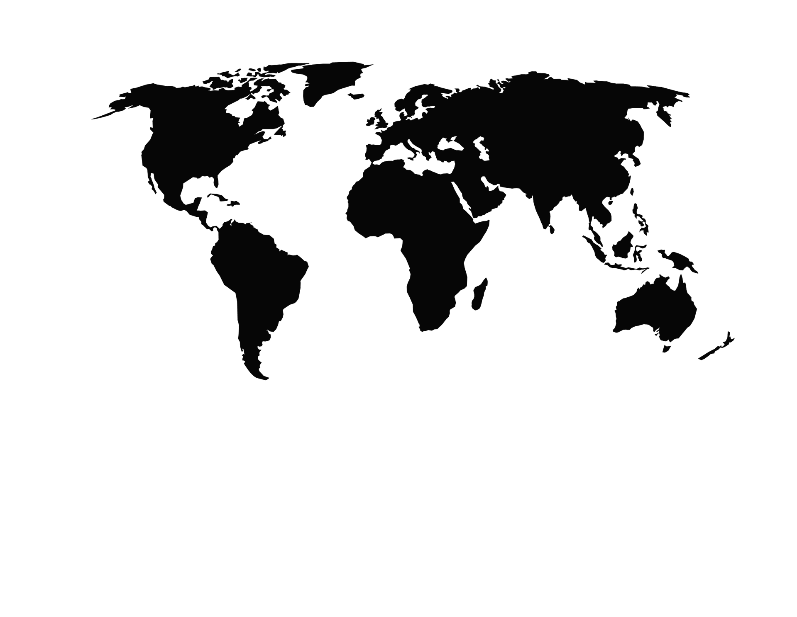

🗺️ Map Calibration Tool
📍 How to Calibrate Your Map
Click a city button below (e.g., "New York")
Click on your map image where that city is located
Repeat for at least 2 cities (more = better accuracy)
Copy the generated configuration code
Paste into your led-dashboard.js map config

Select a city below, then click its location on the map
Select City to Calibrate:
Reset All Points
✅ Generated Configuration
📋 Copy to Clipboard